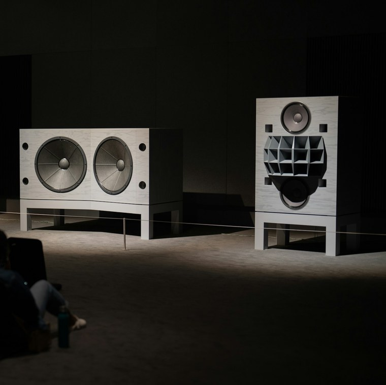

Hören & Sehen
Klang lässt sich nicht beschreiben. Darum führen wir vor: im Showroom an der Klanggasse oder nach Absprache bei Ihnen zuhause.

Showroom Zürich
Im Showroom steht das komplette Programm der eigenen Lautsprecher, dazu die HiFi-Specials für ganze AV-Lösungen. Beratung und Vorführung gibt es nach Vereinbarung, von Montag bis Samstag.
Musik spielen wir dabei mit Qobuz, unserem Streaming-Dienst der Wahl: Der Anbieter aus Frankreich führt ein grosses Angebot in High-Res Audio und liefert viele Informationen zur Musik.

Klangabend mit Manger
Passiv gegen aktiv: Erleben Sie anhand der MANGER p2, wie sich dieser passive Lautsprecher mit dem Illusonic-Audioprozessor aktivieren lässt und wie das im Vergleich mit der passiven Variante klingt, Raumeinmessung inklusive. Zu hören sind MANGER p2 mit Illusonic IAP und Wattson Audio Madison Amp.
Freitag, 27. November 2026, 13 bis 18 Uhr
Samstag, 28. November 2026, 12 bis 17 Uhr
Tonfeld GmbH, Klanggasse 6, 8996 Zürich
Tonfeld-Klangtage
Tonfeld organisiert auch die jährlichen Klangtage, eine kleine High-End-Messe.
Seeufer Sessions
Für Vinyl-Fans: Tonfeld ist an der Produktion der Seeufer Sessions beteiligt.